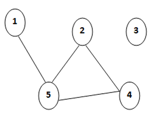
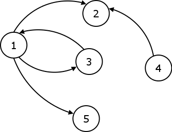

Ce sunt grafurile?
Definiţie : Se numeşte graf G= (X ,U), unde X={x1, x2, x3,…, xi,…, xn}, X≠∅, este multimea de vârfuri sau noduri, iar U={u1, u2, u3,…, uk,…, um}, este multimea de muchii (arce).
Acestea pot fi orientate sau neorientate, orientarea acestora constând în existarea unui sens în care este parcursă o muchie.

Graf Neorientat

Graf Orientat
Pe scurt un graf constă într-o mulțime de noduri și muchii, fiecare dintre acestea din urmă făcând legătura între două noduri(sau legând un nod cu el însuși
formând o buclă).
Grafuri cu costuri
De asemenea, muchiilor le putem atribui costuri, astfel pentru a parcurge muchia respectivă trebuie "plătit" costul respectiv.
Deci, având posibilitatea de a ajunge în nodul B din nodul A prin mai multe drumuri distincte,
se pune problema găsirii celui mai rapid drum(cel având costul cel mai mic).
Pentru aceasta se pot folosi mai multe metode care for fi prezentate în ordinea complexității:
Metoda 1: Backtracking
Această metodă presupune generarea tuturor drumurilor de la nodul A la B,
iar dintre acestea se alege drumul care are cel mai mic cost.
Metoda este una ineficientă deoarece în funcție de graf poate atinge complexități exponențiale sau chiar de ordinul factorialului.
Metoda 2: Algoritmul lui Roy-Floyd - O(n^3)
Algoritmul presupune calcularea distanțelor între toate nodurile astfel și dintanța între A și B.
Calculul distanțelor se realizează verificând dacă pentru două noduri X și Z dacă există un nod Y pentru
care distanța X -> Y -> Z este mai mică decât distanța X -> Z. Asfel se optimizează toate distanțele și în final
vom avea distanța minimă de la A la B.
Metoda 3: Algoritmul lui Dijkstra - O(n^2)
Acest algoritm se bazează pe principiul minimalității specific programării dinamice și calculează
doar distanțele minime dintr-o sursă unică.
Se rețin distanțele de la nodul sursă la celelalte. Inițial aceste vor fi infinit deoarece nu le-am parcurs încă
iar distanța de la sursă la ea însăși este 0.
La fiecare pas se caută un nod care nu a mai fost parcurs și care are cea mai mică distanță diferită de infinit
După ce am ales un nod actualizăm distanța tuturor vecinilor săi(proces numit relaxarea muchiilor). Astfel, pentru fiecare nod parcurs
știm că în momentul parcurgerii distanța minimă până în acel nod este optimă, așadar vom căuta să-i optimizăm vecinii.
Metoda 4: Algoritmul lui Dijkstra - O(n log n)
Ideea acestui algoritm este aceeași cu varianta în n^2 doar că găsirea nodului neparcurs cu
cel mai scurt drum de la sursă se face cu ajutorul unui min heap(o structură de date arborescentă care determină
minimul dintre elementele structurii în O(1) și care efectuează operațiile de actualizare în O(log n); în c++
sunt prezente în librăria STL structurile set și priorityqueue).
Metoda 5: Algoritmul Bellman-Ford - O(n^2)
Acest algoritm se bazează tot pe procedeul relaxării muchiilor doar că acesta nu se bazează pe o
strategie greedy căutând nodul cu cost minim ci aplică acest procedeu tuturor muchiilor.
Deci, spre deosebire de algoritmul lui Dijkstra acesta poate procesa muchii cu costuri negative, spre deosebire de Metoda 3 și 4
unde existența unui ciclu negativ duce la ciclarea algorimului găsindu-se mereu un cost mai mic.
Astfel, algoritmul Bellman-Ford poate identifica ciclurile negative, iar în ciuda complexității aparente n^2, acesta se comportă mai bine în practică.